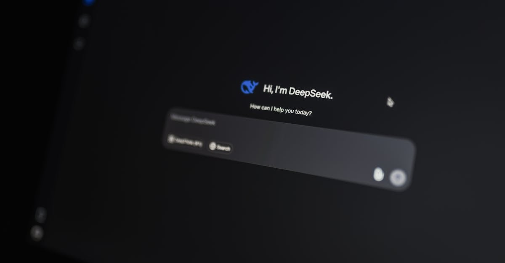
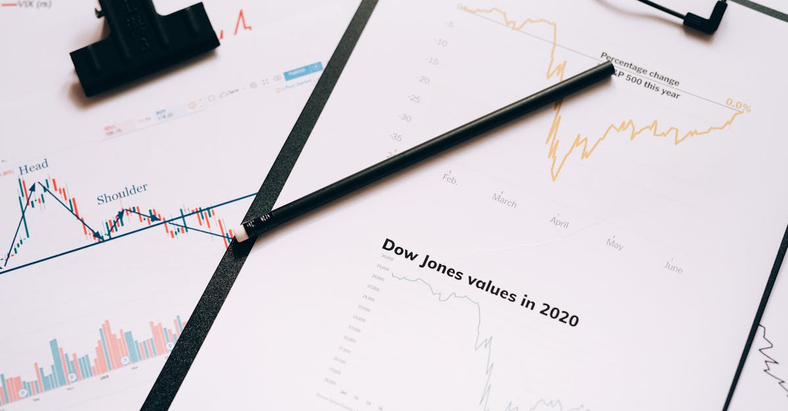

Les Soubresauts Géopolitiques et l'Épargne : Un Lien Indissociable
L'actualité internationale est un théâtre permanent de tensions, et l'une des plus persistantes concerne la République Islamique d'Iran. Récemment, des déclarations du président américain de l'époque, Donald Trump, ont suggéré qu'un accord avec Téhéran pour mettre fin à des hostilités de longue date semblait imminent. Pourtant, des divergences fondamentales demeuraient, notamment sur la question cruciale de l'uranium enrichi, point de friction majeur entre les États-Unis et l'Iran. Cette situation, fluctuante et complexe, a des répercussions directes et souvent sous-estimées sur les marchés financiers mondiaux. Pour l'investisseur particulier, naviguer dans ces eaux troubles peut s'avérer périlleux. Les fluctuations des prix du pétrole, les variations des taux de change, et l'évolution des indices boursiers sont autant de signaux qui, décryptés hâtivement, peuvent mener à des décisions coûteuses. C'est dans ce contexte que l'idée d'une gestion d'épargne plus intelligente, capable d'analyser en temps réel une multitude de facteurs, prend tout son sens. L'intelligence artificielle, par sa capacité à traiter des volumes massifs de données et à identifier des corrélations invisibles à l'œil nu, offre une perspective nouvelle pour sécuriser et optimiser son patrimoine face à l'imprévisibilité des événements géopolitiques.
👉 À lire : IA et Emploi : Les Économistes sous-estiment-ils la menace ?

Iran : Les Enjeux Nucléaires et leurs Reflets sur les Marchés
Le cœur du désaccord entre les États-Unis et l'Iran, tel qu'évoqué dans les rapports de Bloomberg Markets, réside dans le programme nucléaire iranien. La question de savoir si Téhéran accepterait de renoncer à son uranium enrichi était un point de blocage majeur. Cette divergence n'est pas anodine. L'Iran étant un acteur majeur sur le marché mondial du pétrole, toute instabilité politique ou tout accord modifiant sa capacité à exporter son énergie a un impact direct sur les prix du baril. Une escalade des tensions pourrait entraîner une flambée des prix, bénéficiant à court terme aux producteurs mais pénalisant les économies dépendantes des importations d'énergie. Inversement, un accord, même partiel, pourrait mener à une détente et potentiellement à une baisse des cours, avec des effets variés selon les secteurs. Les marchés actions, quant à eux, réagissent souvent de manière amplifiée à ces nouvelles. Les entreprises liées à l'énergie, à la défense, ou même celles ayant des chaînes d'approvisionnement dépendantes de la région, peuvent connaître des volatilités importantes. L'analyse de ces dynamiques nécessite une expertise pointue et une veille constante, des tâches souvent hors de portée pour l'épargnant individuel. C'est là que l'automatisation intelligente commence à démontrer sa valeur, en scrutant ces signaux faibles et en ajustant les stratégies d'investissement en conséquence.
👉 À lire : Carburant Australie: Le plein est fait, la sérénité revient
L'Impact des Sanctions et des Accords Commerciaux sur l'Économie Mondiale
Les relations entre l'Iran et les puissances mondiales sont souvent encadrées par un jeu complexe de sanctions et de négociations d'accords commerciaux. L'application, la levée ou le renforcement de ces sanctions ont des conséquences économiques considérables. Historiquement, les sanctions imposées à l'Iran ont restreint sa capacité à commercer, affectant non seulement son économie interne mais aussi les flux commerciaux internationaux. La perspective d'un accord, même lointaine, soulève la question d'une possible réintégration de l'Iran dans le commerce mondial, ce qui pourrait ouvrir de nouvelles opportunités mais aussi accroître la concurrence dans certains secteurs. Les entreprises internationales qui dépendent des exportations iraniennes, ou qui cherchent à y pénétrer, surveillent ces développements avec une attention particulière. Les marchés financiers, toujours en quête de prévisibilité, peuvent réagir fortement à la moindre modification du paysage des sanctions. Les devises des pays voisins, les flux d'investissement étrangers, et même les prix des matières premières non pétrolières peuvent être affectés. Pour l'investisseur, comprendre ces interconnexions est essentiel. Une stratégie d'épargne optimisée par IA peut aider à anticiper ces mouvements en analysant les données historiques et les projections économiques, offrant ainsi une meilleure résilience face aux chocs externes.

Le Rôle Crucial de l'Intelligence Artificielle dans l'Analyse Financière
Face à la complexité des enjeux géopolitiques comme ceux impliquant l'Iran, et leur impact sur les marchés, l'intelligence artificielle se présente comme un outil révolutionnaire pour l'investisseur. Les algorithmes d'IA peuvent traiter en quelques secondes des montagnes de données : articles de presse, rapports économiques, données boursières en temps réel, tweets d'analystes, déclarations politiques, et bien plus encore. Ils sont capables d'identifier des tendances, des corrélations et des anomalies que l'analyste humain pourrait manquer, ou qu'il mettrait un temps considérable à découvrir. Par exemple, une IA pourrait détecter une corrélation subtile entre une escalade des tensions dans le détroit d'Ormuz et une variation anticipée du prix de certaines actions technologiques, bien avant que cette corrélation ne devienne évidente pour le grand public. Cet avantage informatif permet de prendre des décisions d'investissement plus éclairées et plus réactives. L'analyse prédictive, l'une des branches les plus puissantes de l'IA, peut aider à modéliser différents scénarios géopolitiques et à évaluer leur probabilité d'impact sur des portefeuilles spécifiques. Pour l'épargnant, cela signifie passer d'une gestion réactive à une gestion proactive, anticipant les mouvements du marché plutôt que de simplement réagir aux événements passés.
Optimisation de Portefeuille : L'IA au Service de Votre Épargne
L'objectif principal d'une épargne intelligente n'est pas seulement de générer des rendements, mais aussi de préserver le capital tout en l'optimisant. Dans un environnement international marqué par des incertitudes géopolitiques, comme le dossier iranien, la diversification des actifs devient encore plus critique. Cependant, une diversification efficace ne se limite pas à répartir son argent entre différentes classes d'actifs (actions, obligations, immobilier). Elle implique également de comprendre comment ces actifs interagissent entre eux et comment ils sont susceptibles de réagir à des événements spécifiques. C'est là que l'IA excelle. Les agents IA peuvent analyser en permanence la performance et la corrélation de milliers d'actifs à travers le monde. Ils peuvent identifier les moments opportuns pour rééquilibrer un portefeuille, vendre des actifs sous-performants ou sur-performants, et investir dans des opportunités émergentes, le tout 24h/24 et 7j/7. Prenons un exemple : si une IA détecte, suite aux nouvelles sur l'Iran, une volatilité accrue attendue sur les marchés émergents, elle pourrait suggérer de réduire temporairement l'exposition à cette classe d'actifs pour privilégier des valeurs refuges ou des secteurs moins sensibles aux chocs géopolitiques. Cette capacité d'ajustement dynamique est fondamentale pour protéger votre épargne des aléas extérieurs.

Les Limites de l'Analyse Humaine Face à la Vitesse de l'Information
L'être humain, malgré ses capacités cognitives exceptionnelles, a des limites intrinsèques lorsqu'il s'agit de traiter la quantité et la vitesse de l'information financière et géopolitique actuelle. Les marchés financiers opèrent désormais à une échelle globale et à une vitesse fulgurante. Les nouvelles, qu'elles proviennent de Téhéran, de Washington, ou de n'importe quel autre centre névralgique, peuvent se propager et influencer les cours en quelques secondes. Un analyste financier, aussi expérimenté soit-il, ne peut physiquement pas lire, comprendre et agir sur l'intégralité des flux d'information disponibles. De plus, les biais cognitifs humains – comme l'aversion à la perte, l'excès de confiance, ou le biais de confirmation – peuvent souvent conduire à des décisions d'investissement sous-optimales, particulièrement en période de stress ou d'incertitude. L'IA, elle, est immunisée contre ces biais. Elle opère sur la base de données et d'algorithmes objectifs. Elle peut traiter simultanément des milliers de sources d'information, identifier des schémas complexes et exécuter des transactions à une vitesse surhumaine. L'idée n'est pas de remplacer l'humain, mais de l'augmenter. Un agent IA agit comme un copilote infatigable, fournissant des analyses précises et exécutant des stratégies définies, permettant à l'investisseur de se concentrer sur la vision stratégique globale et la gestion des risques à plus long terme.
Investissement Automatisé : La Clé d'une Épargne Résiliente
Dans un monde où les événements géopolitiques comme les pourparlers iraniens peuvent créer des vagues d'incertitude sur les marchés, le concept d'investissement automatisé prend tout son sens. Il ne s'agit pas simplement de laisser une machine gérer votre argent à l'aveugle. Au contraire, l'investissement automatisé piloté par l'IA repose sur des stratégies sophistiquées, définies par des experts et exécutées avec une précision algorithmique. Ces systèmes peuvent :
- Analyser en continu les conditions du marché et les indicateurs économiques mondiaux.
- Identifier les actifs les plus prometteurs et ceux présentant des risques excessifs.
- Ajuster automatiquement la composition du portefeuille en fonction des objectifs prédéfinis et des changements de l'environnement de marché.
- Exécuter des transactions de manière quasi instantanée pour saisir les opportunités ou limiter les pertes.
Un agent IA peut, par exemple, détecter une corrélation négative entre une déclaration belliqueuse d'un leader mondial et la performance d'une action spécifique. Il pourrait alors proposer, ou exécuter directement selon les paramètres fixés, une réduction de l'exposition à cette action, tout en renforçant la position sur des actifs considérés comme plus sûrs dans ce contexte. Cette capacité à réagir rapidement et de manière objective aux nouvelles, qu'elles soient liées à l'Iran, à la politique monétaire, ou à toute autre source d'instabilité, est ce qui rend l'investissement automatisé par IA particulièrement pertinent pour construire une épargne résiliente.
Préparer l'Avenir : Comment l'IA Redéfinit la Gestion de Patrimoine
L'évolution rapide du paysage géopolitique, illustrée par les négociations complexes avec l'Iran, nous rappelle que l'avenir est par nature incertain. Pour l'investisseur, cela signifie que les approches traditionnelles de gestion de patrimoine, souvent basées sur des analyses rétrospectives et des ajustements périodiques, pourraient ne plus suffire. L'intelligence artificielle offre une nouvelle voie, celle d'une gestion de patrimoine dynamique, prédictive et personnalisée. Imaginez un système qui non seulement suit vos investissements, mais qui anticipe activement les risques potentiels liés aux tensions internationales, aux évolutions technologiques, ou aux changements climatiques. Un agent IA peut apprendre de vos préférences, de votre tolérance au risque, et de vos objectifs financiers pour créer et ajuster une stratégie sur mesure. Il peut simuler l'impact de divers événements mondiaux – comme une rupture d'accord avec l'Iran – sur votre portefeuille et proposer des stratégies d'atténuation proactives. C'est la promesse d'une gestion de patrimoine véritablement intelligente, capable de s'adapter en temps réel aux défis et aux opportunités d'un monde en constante mutation. En intégrant ces technologies, vous ne vous contentez pas de suivre les marchés ; vous vous donnez les moyens de naviguer plus sereinement et plus efficacement dans leur complexité.
Conclusion
La situation géopolitique autour de l'Iran, avec ses négociations complexes et ses enjeux nucléaires, n'est qu'un exemple parmi d'autres des défis auxquels sont confrontés les investisseurs aujourd'hui. Les marchés financiers sont de plus en plus interconnectés et sensibles aux événements mondiaux. Dans ce contexte, l'adoption d'une approche d'épargne intelligente et d'investissement automatisé par IA n'est plus un luxe, mais une nécessité pour ceux qui souhaitent protéger et faire fructifier leur patrimoine. Un agent IA, capable d'analyser des volumes massifs de données 24h/24, d'identifier des corrélations subtiles et d'exécuter des stratégies avec une rapidité et une objectivité inégalées, offre un avantage concurrentiel indéniable. Il permet de passer d'une gestion réactive à une stratégie proactive, d'anticiper les risques liés aux tensions internationales et de saisir les opportunités émergentes. En somme, l'IA redéfinit la gestion de patrimoine, la rendant plus accessible, plus efficace et surtout, plus résiliente face à l'imprévisibilité du monde. Pour l'investisseur moderne, s'équiper des outils d'analyse et d'automatisation les plus performants est la clé pour naviguer sereinement dans les complexités financières du 21e siècle.